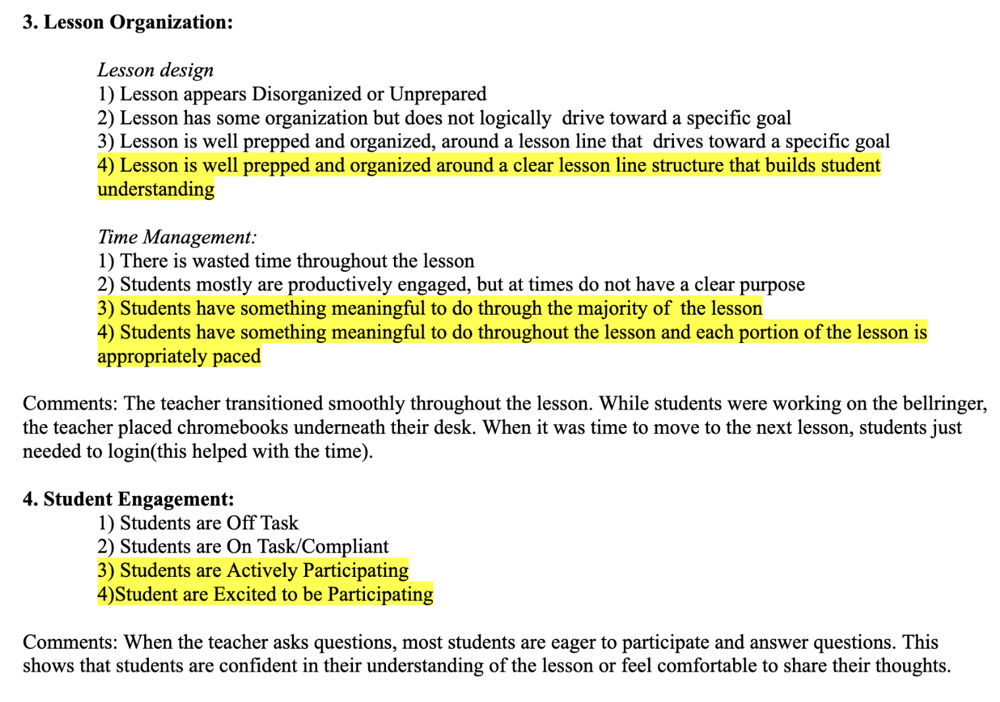

Working in teacher corps, I have held myself to a standard of constant improvement. Professionalism starts with the man in the mirror. I am always looking for ways to improve and grow. At the start of my second year teaching, I pledged to be more organized and stay ahead on my planning. Despite only accomplishing one of those professional goals, in striving towards them, I have become a better teacher than I was last year. At the beginning of my teaching career, I insisted that I would hold students to a high standard, but those standards always start with me. The first person I hold to any standard is myself.
Being a professional teacher means maintaining a set of habits and norms that deliver good lessons to the students. Professionalism means being earnest and open to collaboration with colleagues, while holding oneself to high standards. It means pushing students to grow and succeed however they can. The most essential feature of professionalism is honest self-reflection. Knowing my own strengths and weaknesses enables me to best put myself to work for the students in harmony with the rest of my colleagues. There are plenty of smaller skills that come into play: communicating consistent expectations to students, showing care and concern for student wellbeing outside the classroom, communicating effectively with other teachers about student needs, and being punctual for all work deadlines. In all of these cases, the end goal is them same: pushing students to grow by working with my colleagues to provide a meaningful educational experience.
My administration frequently comes around to observe teachers. The below observation are a few notes from an assistant principal on one of my second-year lessons.
